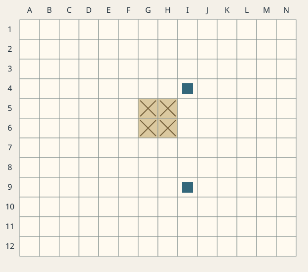

Одинаковые правила, разная история
Все карты совпадают с сеткой нативного пакета: 14 × 12, клетка — 5 футов. G5/H5/G6/H6 — трудная местность; I4/I9 — половинное укрытие. Остальные детали описания декоративны, пока ведущий не изменил поле штатно.
Расстановка и параметры
Начальные клетки героев: B3, B4, B5, B6, C3, C4, C5, C6; штатная подготовленная встреча назначает их присутствующим героям по именам. Противники: L3, L4, L5, L6, M3, M4. Используйте только нужное число фигур. Перед началом герои должны находиться в месте встречи.
Для 3 / 4 / 5 / 6 / 7 / 8 игроков: 2 / 3 / 3 / 4 / 5 / 6 противников, здоровье каждого 12 / 14 / 16 / 18 / 20 / 22. Защита 12; скорость 20 футов; одна ближняя атака +3, 1d4+1 дробящего урона, досягаемость 5 футов.
Враги — простая поддерживаемая модель. Мирные решения и ограничения сцены описаны отдельно; ведущий подтверждает их результат. После первого раунда напомните пути переговоров или отступления. Встречи не запускаются автоматически.
Проход к стене
Только по решению ведущего и игроков, если в вечере 3 герои сознательно пытаются силой пройти закрытый двор после предложения официального осмотра. Отказ от столкновения сохраняет все документальные маршруты.
Цель и выходы
Развести людей у узкого прохода и выйти без тяжёлого вреда; получение улики не требует победы. Герои могут отступить через восточную арку, после чего оформить сопровождаемый осмотр.
Показать номер заявки, согласовать визит с Эмилем либо оставить двор и работать по обмеру. Сторожа дают место для ожидания и не изымают законные копии. Предложение мирного выхода действует до конца сцены.
Поведение противников
Наёмные сторожа, каждый взрослый не моложе 30 лет. Рабочие куртки и короткие палки; знают лишь распоряжение не пускать посетителей без согласования, не тайну пожара.
Держат проход, предлагают остановиться и пользуются обычным движением и одной ближней атакой при продолжении драки. Не преследуют отступивших за арку, принимают сдачу и прекращают схватку при согласии выйти. Нелетальный исход объявляется намерением и подтверждается ведущим в доступных правилах.
Размер группы
3 игрока: 2 сторожа по 12 HP; 4: 3 по 14; 5: 3 по 16; 6: 4 по 18; 7: 5 по 20; 8: 6 по 22. Всем AC 12, одна ближняя атака +3 на 1d4+1. При 3–5 местах один участник говорит, остальные обеспечивают отход; при 6–8 две группы освобождают пространство и ведут переговоры. Дополнительных способностей нет.


Сетка 14×12, клетка — 5 футов. Трудная местность только в G5, H5, G6, H6 (четыре клетки): неровная брусчатка. Половинное укрытие в I4 и I9: низкие пустые ящики. Восточный край открыт для отступления. Огня и обрушений нет; северная стена служит фоном. Выходы и прочие детали задаёт ведущий в описании; на нативном поле дополнительных препятствий нет.
Рама у выхода
Только если в вечере 5 герои сознательно пытаются вынести охраняемый фрагмент без оформления и выбирают схватку после предложения оставить его для официальной доставки. Осмотр на месте свободен от этого столкновения.
Цель и выходы
Поставить раму в безопасное место, прекратить толчки и сохранить историю хранения. Победа в бою не легализует изъятие и не даёт дополнительных сведений; отход в читальную комнату завершает конфликт.
Оставить предмет на столе, принять сопровождаемую доставку Милы либо заказать заверенные изображения. Извинение и запись о произошедшем восстанавливают доступ к копиям; дежурные не требуют признания какой-либо версии пожара.
Поведение противников
Дежурные архива, каждый не моложе 30 лет, с простыми тростями. Их задача — сохранность имущества; они знают только опись и правила выдачи, а не виновницу поджога.
Перекрывают выход обычным перемещением и требуют поставить раму. Если начинается драка, используют единственную ближнюю атаку, не преследуют сдавшихся и прекращают действия при возвращении предмета. Рама не становится оружием или особым объектом с выдуманными механиками.
Размер группы
3 игрока: 2 дежурных по 12 HP; 4: 3 по 14; 5: 3 по 16; 6: 4 по 18; 7: 5 по 20; 8: 6 по 22. Всем AC 12, одна ближняя атака +3 на 1d4+1. Малый состав может сразу говорить и отходить; большой разделяет переговоры и освобождение пути. Без особых атак или автоматических таймеров.

Сетка 14×12, клетка — 5 футов. Трудная местность только в G5, H5, G6, H6 (четыре клетки): сложенные пустые папки. Половинное укрытие в I4 и I9: столы. Южный выход ведёт в читальную комнату для безопасного отхода. Подлинные документы остаются вне игровой сетки. Выходы и прочие детали задаёт ведущий в описании; на нативном поле дополнительных препятствий нет.
Место у двери
Необязательная сцена вечера 8: взрослые сторонники прежнего решения спорят в прихожей о размещении ожидающих. Столкновение запускается только если участники отвергают предложение разойтись по комнатам и выбирают физический конфликт.
Цель и выходы
Освободить дверь и дать людям выйти без тяжёлого вреда. Слушание и приём документов переносятся в соседнюю комнату независимо от исхода; подавление оппонентов не считается победой в деле.
Предложить отдельное ожидание, передать расписание через Лидию или самим перейти в соседнюю комнату. Можно выслушать возражение и пообещать передать его председателю без согласия с ним. Отступление сохраняет право выступить.
Поведение противников
Посетители не моложе 30 лет, в мокрых пальто, с обычными прогулочными тростями. Верят прочитанному старому решению; не знают закрытых приложений и не являются тайными людьми Зои.
Занимают дверной проём и громко спорят. При выбранной драке используют обычное движение и одну ближнюю атаку, затем принимают предложение разойтись. Не преследуют ушедших, не уничтожают доказательства и не получают дополнительных сил от размера группы.
Размер группы
3 игрока: 2 посетителя по 12 HP; 4: 3 по 14; 5: 3 по 16; 6: 4 по 18; 7: 5 по 20; 8: 6 по 22. Всем AC 12, одна ближняя атака +3 на 1d4+1. При 3–5 местах достаточно одного переговорщика и открытого выхода; при 6–8 две группы сопровождают желающих выйти и договариваются о рассадке. Никаких новых боевых правил.

Сетка 14×12, клетка — 5 футов. Трудная местность только в G5, H5, G6, H6 (четыре клетки): сдвинутые пустые скамьи. Половинное укрытие в I4 и I9: колонны. Западный и восточный выходы ведут в разные комнаты. Запертых выходов, огня и опасных высот нет. Выходы и прочие детали задаёт ведущий в описании; на нативном поле дополнительных препятствий нет.